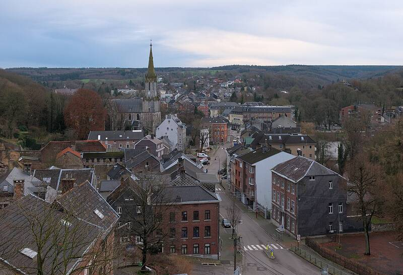

Belgian UFO wave
Eupen, Belgium, 1989 to 1990

Starting in November 1989, thousands of people reported large triangular craft. On the night of March 30, 1990, the Belgian Air Force sent F-16s after radar contacts and later shared its findings with the public. 1
Open in the interactive Watcher
Related
Sources
- Belgian UFO wave Wikipedia